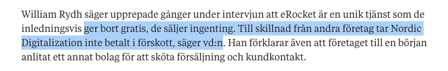
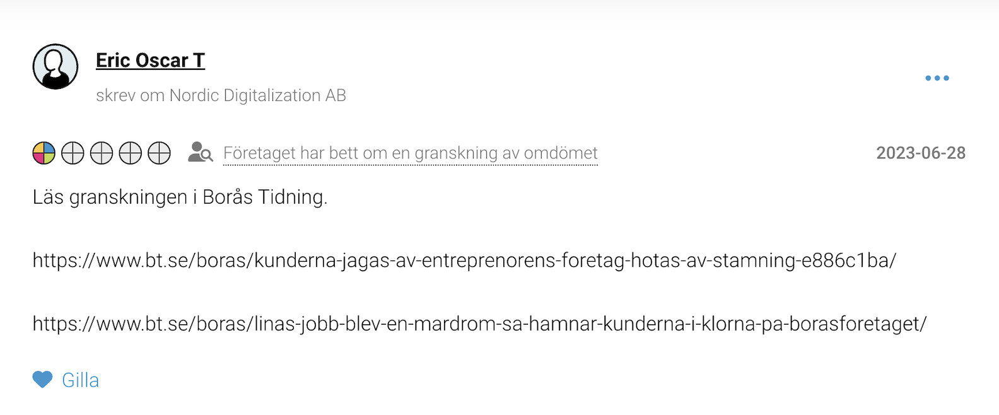

Ett etablerat digitalt renommé
BT:s äldre artiklar placerar William i ett legitimt digitalt och entreprenöriellt sammanhang. Det är utgångspunkten innan ramen ändras.
Se artikelbågenDokumentredovisning · ärende 5000-K613147-26 · yrkande 50 miljoner kronor
Det här är större än en produkt eller ett bolag. Det handlar om hur en lokal tidning, inom det svenska mediestödssystemet, enligt dokumentationen fick omfattande motbevis men ändå lät en personligt skadlig berättelse stå kvar. eRocket var den innovationsrika tillgång som förstördes: det visar produktdata, avtal, fakturor och leveranser. Frågan är hur Borås Tidning kunde fortsätta framställa William Rydh som ansiktet för ett lurande efter att redaktionen fått motbevisen, ansvarskedjan och en uttrycklig varning om följderna.
Följ resan
Webbplatsen ska läsas som en dokumenterad resa: från ett etablerat digitalt livsverk, via ett innovationsprojekt byggt för att minska kundens risk, till en publicerad bild som enligt bevisningen gjorde William till den gemensamma nämnaren för något han försökte motverka.
BT:s äldre artiklar placerar William i ett legitimt digitalt och entreprenöriellt sammanhang. Det är utgångspunkten innan ramen ändras.
Se artikelbågeneRocket beskrivs i dokumenten som en prestationsmodell: syns kunden inte på Google, uppstår ingen prestationsfaktura. Bevisen visar produkt, avtal, fakturor och rankingdata.
Se affärsmodellenI stället för att gömma sig bjöd han in reportrarna, visade kontoret och förklarade modellen, säljledet och risken att BT skulle missförstå helheten.
Lyssna med tidskoderDokumentationen gör gällande att BT:s publiceringar inte bara granskade ett bolag. De skapade en personligt skadlig identitet kring William, Google, eRocket och lurandepåståendet.
Se artikel för artikelLånga mejl, rättelseinvändningar, avtal, fakturor, produktdata och ansvarskedja skickades till redaktionen. Sidan visar varför de enligt William borde ha brutit förloppet.
Öppna fullarkivetSkadebilden handlar inte bara om gamla artiklar. Den handlar om förlorat förtroende, omöjliggjorda uppdrag, konkurs, skuld och en digital identitet som fortsätter möta William.
Se följdernaLevande digital anmälan
Den här webbplatsen är en levande, digital dokumentation av den ingivna polisanmälan, kompletteringarna och bevisningen. Den ersätter inte myndighetens ärende, men den gör beviskedjan tillgänglig, verifierbar och svår att tysta eller glömma.
Om ingen instans driver saken hela vägen, ligger materialet ändå kvar: artiklarna, intervjun, avtalen, fakturorna, produktdatan, skadeunderlagen och integritetsankarna. Det är syftet med sidan. Sanningen ska kunna granskas även när processen stannar.
Startpunkten
Inför den första artikeln kom frågor om en påstådd mardröm på arbetsplatsen. William svarade inte genom att gömma sig. Han bjöd in reportrarna till kontoret, med anställda på plats, för att visa verksamheten, teamet, produkten och sammanhanget. Det är centralt: kontakten började med öppenhet, inte undvikande.
Kontoret, personalen, produkten och den faktiska arbetsmiljön skulle kunna kontrolleras på plats.
Under den oklippta intervjun förklaras modellen, kundflödet, den externa försäljningen och risken för en felaktig publicering.
Efter publiceringarna skickades bevis, mejl och rättelseinvändningar. Dokumentationen gör gällande att materialet inte stoppade eller rättade berättelsen.
BT:s egen artikelhistorik
Genomgången av BT:s 16 sökträffar på "William Rydh" visar ett tydligt före-och-efter. Samma digitala kompetens, samma Viskaholmsmiljö och samma entreprenöriella sammanhang som tidigare beskrevs legitimt blir från 19 november 2022 ramen för en personligt skadlig berättelse.
BT skriver om ett antirasistiskt sajtprojekt där William framställs som digital initiativtagare med stort genomslag.
I näringslivsmaterial om reklam, transparens och marknadsföring förekommer William och Adwise i ett legitimt expert- och företagsbyggarsammanhang.
BT beskriver Adwise som digital specialistbyrå i nyrenoverade Viskaholmslokaler. Samma miljö används senare i en helt annan berättelse.
Artikeln om "mardröm" och "klorna" etablerar en ny ram: William, Google/SEO, eRocket och kontoret kopplas till lurande och grundlurade kunder.
Uppföljningarna använder teman som "jagas", "hotas", "kritiserade" och "bluffsida". Berättelsen flyttas även till Moderaterna och Adwisemedia.
I konkursrapporteringen blir "granskade företagaren" en etikett. 2022 års berättelse fungerar då som bakgrundsidentitet, inte som en avslutad publicering.
Huvudfrågan
Leveransen är bara en del. Det allvarliga ligger i ansvarskedjan: reportrar, redaktionell ledning, ansvarig utgivare, uteblivna rättelser och fortsatt spridning.
Kunden valde sökfraser. eRocket producerade och arbetade med synligheten. Faktura uppstod först när de avtalade fraserna nådde topp 10 på Google.
Under den oklippta intervjun förklarades prestationsmodellen, den externa försäljningen, kundkontrollen och risken att en felaktig artikel skulle förstöra namn och verksamhet.
Avgörande motuppgifter fick inte motsvarande plats. Ett varningsuttalande om tidningens möjliga missförstånd användes i stället som rubrikcitat.
Rättelsemejl och fortsatt korrespondens dokumenterar att redaktionen och ansvarig utgivare informerades om felen och konsekvenserna efter publiceringen.
Visuell bevisning
De centrala bilderna visar flödet: investering och omfattning, faktisk produkt, mätbar Google-prestation, avtalsflöde, prestationsbaserad modell och senare spridning av BT:s berättelse.




Inte påstående mot påstående
Varje lager bekräftar de andra. Originalljudet visar vad BT visste. Avtalen och fakturorna visar vad som såldes och när betalning uppstod. Produktdatan visar leveransen. Korrespondensen visar invändningarna. Skadeunderlagen visar följderna.
Publicerad uppgift jämförd med dokument
Varje punkt kan kontrolleras mot bevarade handlingar och originalljud från tiden före publiceringen.
Originalljud · dokumenterat
I den oklippta intervjun avser uttrycket risken att Borås Tidning skulle missförstå verksamheten och skriva en skadlig artikel. Rubriken fick det att framstå som något helt annat.
Avtal + fakturor · dokumenterat
BankID-avtal och fakturor visar modellen: fakturering knöts till att avtalade sökfraser nådde topp 10 på Google.
Produktdata · dokumenterat
Dashboard, kampanjer, sökord och mätbara rankingförändringar visar en fungerande tjänst med faktiska leveranser.
Fakturor · dokumenterat
Fyra betalda provisionsfakturor och samtida dokument visar att en extern aktör skötte den tidiga försäljningen och kundkontakten.
Intervju + e-post · dokumenterat
Redaktionen fick höra om prestationsmodellen, leveransen, den externa aktören, vidtagna åtgärder och den förutsägbara personliga skadan.
Citatets dokumenterade sammanhang
”Så lurar Boråsföretaget sina kunder: ‘Har missförstått hela skiten’”
Sammanställningen får Williams ord att framstå som ett arrogant avfärdande av kunder.
”Det är därför vi upplever att det finns en risk här att Borås Tidning kommer hit, missförstått hela skiten, skriver en jävla skitartikel om oss...”
Originalljudet visar att William varnade för att tidningen skulle missförstå helheten och förstöra verksamheten.
Källa: den oklippta intervjun den 16 november 2022, bevarad med tidskod och filhash.
Affärsmodellen
eRocket flyttade risken från kunden till leverantören. Produkten byggdes först, synligheten mättes och faktura skapades när avtalad prestation uppnåddes.
eRocket beskrivs som webbplats, hosting, domän, SEO och rapportering.
Google-data används för att följa avtalade sökfrasers placering.
Individuella avtal och fakturaexempel knyter betalning till uppnådd placering.
Riskfördelningen
Skillnaden mot en traditionell byråmodell framgår av avtal, fakturor och den oklippta intervjun. Kunden fick en producerad och förvaltad leverans. Betalning uppstod först när avtalade sökfraser nådde topp 10 på Google.
Dokumenterad uppgift i intervjun
Vid 00:29:59–00:30:30 och 01:01:14–01:03:17 beskriver William att omkring 29–30 procent inte fakturerades trots att bolaget bar kostnaderna för leveransen.
Illustrativ värdeskala per 100 kunder
Produktspåret
Den bevarade översikten visar bland annat 128 prestationsbaserade kampanjer, 1 410 sökord och tiotusentals registrerade positionsförändringar.
Vad detta visar: Uppgiften om ett bluffupplägg är oförenlig med en produkt som byggde webbplatser, mätte sökord och skapade fakturor utifrån registrerad prestation.
Försäljningskedjan
Den tidiga försäljningen och kundkontakten sköttes genom en extern aktör. När felkommunikation upptäcktes tog Williams bolag över kontrollen, kontaktade kunder och avslutade samarbetet.
Före publiceringen
Prestationsmodellen förklaras direkt i intervjun.
William beskriver kundkontakt, internisering och avslutat samarbete.
Redaktionen varnas uttryckligen för ett missförstånd som kan skada namn och verksamhet.
William erbjuder namn och adress för vidare kontroll, samtidigt som han accepterar sitt vd-ansvar.
Dokumenterade aktörer och fortsatt spridning
Dokumenten visar var den tidiga försäljningen låg, vilka redaktionella uppgifter som publicerades och hur artiklarna senare användes på bolagets betygssida.
Betalda provisionsfakturor och offentliga bolagsuppgifter visar att Empire of Sales i Borås AB var den externa säljaktör som fakturerade Nordic Digitalization för eRocket-affärer. Det är där de påstådda kundmissförstånden först måste granskas.
BT fick veta att försäljningsledet var externt före publiceringen.Reportrarna fick hela affärsmodellen, ansvarskedjan, leveransen, åtgärderna och skadevarningen. Ändå valde tidningen ett kategoriskt lurandepåstående och ett citat vars verkliga innebörd originalljudet motsäger.
Publiceringen gjorde William personligen till bärare av lurandepåståendet.Ett konto med namnet Eric Oscar T lämnade lägsta betyg på bolagets Reco-sida utan beskriven kundupplevelse och hänvisade enbart till två BT-artiklar. Samma dag presenterades Eric Thulin offentligt som redaktionell utvecklingschef på Gota Media.
Artiklarna användes som grund för lägsta möjliga kundbetyg.Var det bara ett missförstånd?
Under mer än två timmar fick redaktionen affärsmodellen, leveransen, den externa säljkedjan och Williams invändningar förklarade. Därefter publicerades ändå det kategoriska lurandepåståendet.
Vilka intressen fanns?
eRocket sålde hemsida och Google-synlighet enligt en prestationsmodell. Gota Medias egen företagsmarknad erbjuder också hemsidor, SEO, SEM och Google-marknadsföring. Senare dokumenteras ett direkt agerande från en redaktionell utvecklingschef mot eRockets Reco-betyg.
Namngivet granskningsspår
Offentliga bolagssidor anger Nenad Krstic som styrelseledamot/verklig huvudman i Empire of Sales i Borås AB, bolaget som enligt bevisningen fakturerade Nordic Digitalization för eRocket-försäljning. Offentliga LinkedIn-uppgifter kopplar honom även till Effektiv Media Group, som verkar inom digital marknadsföring, SEO och webb. Frågan är varför BT gjorde William till ansiktet för kundmissnöjet utan att ge den externa säljkedjan motsvarande granskning.

Ekonomiskt sammanhang
Före BT:s publicering fanns omsättning, positivt beräknat resultat, personal, kundfordringar och en färdig produkt. Efter publiceringarna följde förlorat förtroende, inkomstfall och konkurser.
redovisade intäkter
angivet värdeintervall för eRocket
Samlad beviskedja
Filtrera efter bevisets funktion. Varje kort visar vad dokumentet bevisar och varför det spelar roll.
Händelseförloppet
Under cirka 18 månader utvecklades eRocket med ett helt team innan tjänsten gick ut brett på marknaden.
eRocket går ut bredare. En extern aktör används i den tidiga försäljningen.
Betalda provisionsfakturor dokumenterar eRocket-försäljning genom extern aktör.
Rapporter visar faktisk omsättning, personal och positivt beräknat resultat.
Över två timmar där William förklarar modellen, bestrider lurande och varnar för skadan av ett missförstånd.
Rubriken publiceras. William skickar rättelseinvändningar den 19–20 november.
En person i Gota Medias redaktionella ledning använder BT-länkar i ett enstjärnigt Reco-omdöme utan beskriven kundrelation.
En daterad värderingsrapport placerar eRocket i intervallet 39,6–48,4 miljoner kronor.
Nordic Digitalization, AWM och William Rydh Holding försätts i konkurs.
Beslutet avgör inte om förtal förekommit. Möjligheten till enskilt åtal kvarstår som separat fråga.
Samlad slutsats
Publiceringsprinciper
Varje central slutsats kopplas till originalljud, avtal, fakturor, leveransdata eller samtidiga handlingar.
Varje påstående ska kunna spåras till ett namngivet underlag.
Enskilda kundupplevelser får inte radera avtal, leveranser och den verkliga ansvarskedjan.
Personnummer, privata kontaktuppgifter och kundmaterial publiceras inte öppet.
Borås Tidnings svar och relevanta rättelser ska återges tydligt när de finns.
Slutsats
eRocket producerade webbplats, hosting, domän, SEO och rapportering innan faktura uppstod. Om avtalad Google-synlighet uteblev fick kunden leveransen utan faktura. Borås Tidning fick detta förklarat före publiceringen men gav ändå läsarna bilden av ett medvetet lurande.
Läs redovisningen från början